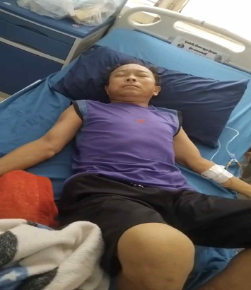
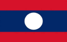
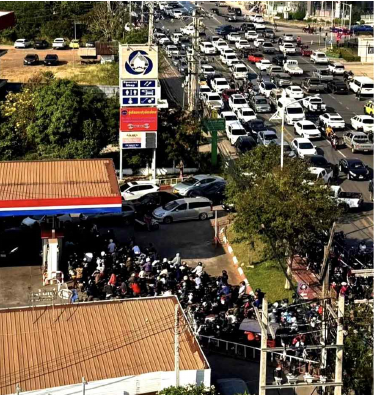
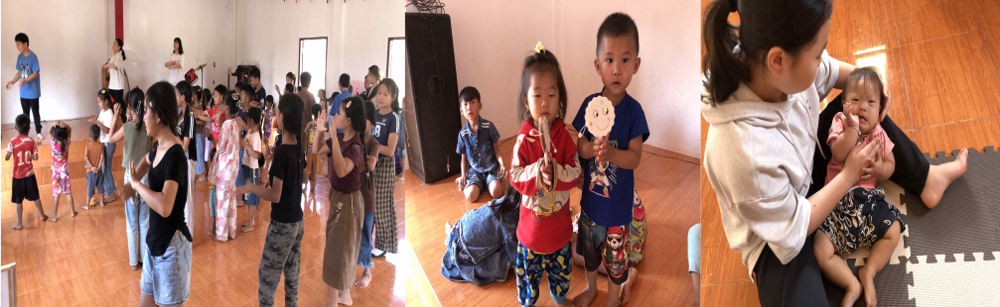
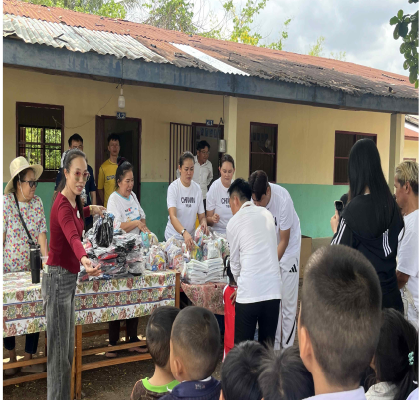

01

CARE
푸뺑경용 사역자의 투석
말기 신부전으로 혈액 투석을 시작했습니다. 치료를 잘 감당하고, 가족에게 필요한 위로와 도움이 이어지도록 함께 마음을 모아 주세요.
주 2~3회 병원 방문

김세진 · 박영순 · 하랑 · 하영 · 하진
“우리를 긍휼히 여기시사 이 땅에 은혜를 부어 주소서.”
국제 분쟁과 호르무즈 해협 봉쇄의 여파로 유가가 급등했습니다. 수입 의존도가 높은 환경 속에서 물가와 생활의 부담이 깊어지고 있습니다.


CARE
말기 신부전으로 혈액 투석을 시작했습니다. 치료를 잘 감당하고, 가족에게 필요한 위로와 도움이 이어지도록 함께 마음을 모아 주세요.

LEARN
명절 뒤에도 아이들은 먼저 와서 공부방을 기다립니다. 말씀과 라오스어, 한국어를 함께 배우며 서로의 하루를 나눕니다.

SHARE
성도들과 공립학교를 찾아 구호품과 학용품을 전하고, 학생들을 위한 식사를 준비했습니다.
03 / PRAYER
현지 ㄱ회 방문과 사역 가운데 믿음의 역사를 경험하며, 오고가는 길에 안전하도록
공부방의 아이들이 말씀을 배우고 한국어 실력도 꾸준히 성장하도록
조이 공동체 식구들의 건강과 학업, 새 학기 장학사역이 잘 준비되도록
저희 가정이 성령으로 충만하여 주님이 원하시는 사역을 감당하도록